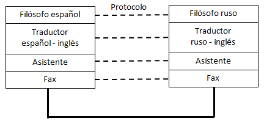

2. Modelo de referencia OSI y arquitectura TCP/IP
Profundizando en el mundo de las redes de ordenadores y siguiendo con las analogías con el mundo real, es posible que dos personas en cualquier parte del mundo puedan compartir un interés común. A modo de ejemplo, tenemos dos filósofos, uno español y otro ruso que necesitan compartir sus ideas. El primer problema que encuentran es el idioma y ambos necesitan un intérprete. El español necesita un intérprete que traduzca las ideas de español a inglés, por ejemplo. El traductor ruso, hace lo mismo con las palabras del ruso al inglés. Ambos traductores no tienen ni idea de cómo van a enviar las ideas desde España a Rusia y viceversa y necesitan un asistente que utilice un medio común para el envío de información. Ambos asistentes acuerdan que la mejor forma de intercambio de ideas es el fax ya que ambos disponen de uno en la oficina.
Este "puzzle" de comunicación queda resumido en la siguiente imagen:

Ejemplo de comunicación (analogía con el modelo OSI)
Imagen de elaboración propia
Esto es comparable a la torre de protocolos OSI o los protocolos TCP/IP que utilizan los ordenadores para poder comunicarse entre sí. Una aplicación de un ordenador sería comparable a un filósofo. La aplicación no tiene por qué saber qué sistema operativo tendrá el ordenador remoto o si los datos los recibirá a través de Wifi o un cable. Lo único que le interesa a la aplicación es hablar de lo mismo con la aplicación que reside en el ordenador del otro extremo. La aplicación no sabe cómo enviar los datos pero sí que tiene disponible un componente bajo ella a la que le puede enviar la información y desentenderse de los posibles problemas de comunicación.
La información, como se puede comprobar, va bajando de nivel en nivel hasta que llega al último y se envía. En el extremo remoto, la información va subiendo de niveles hasta que llega a la aplicación que está situada en lo más alto. Por el camino, es posible que el fax haya fallado y se ha tenido que volver a enviar o aspectos similares. Por tanto, en un ordenador conectado en red hay una torre de protocolos. Una aplicación como Google Chrome o Mozilla Firefox estarían en lo alto de la torre de protocolos actuando como cliente de la información y comunicándose con un servidor web situado en lo alto de la torre de protocolos del ordenador remoto.
Los filósofos utilizan algo que les une para entenderse. En este caso, es la filosofía. Los traductores también pueden usar algo en común que les une para poder intercambiar información y acordar un lenguaje común para este caso. Esto que une tanto a los filósofos, traductores, asistentes, etc. está representado en la imagen en línea discontinua y es el protocolo.
El modelo OSI es un ejemplo de torre de protocolos. Es un modelo muy completo pero no se usa en realidad. En la práctica, en las redes de ordenadores se utiliza un modelo simplificado: arquitectura TCP/IP.
Importante
En toda computadora conectada en red, corre una torre de protocolos que permite que una aplicación que se está ejecutando pueda enviar datos a través de una red a otra aplicación corriendo en un ordenador remoto.
Una aplicación que intercambia datos con otra aplicación en otro ordenador, utilizan el mismo protocolo para ello.
El modelo OSI es un ejemplo de torre de protocolos. Es un modelo muy completo pero no se usa en realidad. En la práctica, en las redes de ordenadores se utiliza un modelo simplificado: arquitectura TCP/IP.